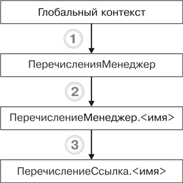

1.2.6.1. Объекты встроенного языка для работы с перечислениямиНа следующей схеме изображено взаимодействие объектов встроенного языка для работы с перечислениями (рис. 29.9).

Рис. 29.9. Объекты встроенного языка для работы с перечислениями
ПРИМЕЧАНИЕ
Заливкой выделен объект манипулирования данными. Метод объекта, от которого идет стрелка, приводится в листинге под соответствующей цифрой, а объект, к которому идет стрелка, – это тип объекта, возвращаемого методом.
Узнай больше!
Про основные виды объектов встроенного языка можно прочитать в главе «Объекты встроенного языка для работы с прикладными данными».
Ниже приведены примеры использования объектов встроенного языка для работы с перечислениями (листинг 29.7).
Листинг 29.7. Примеры использования объектов
|